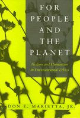

<body bgcolor="#FFFFFF" text="#000000" link="#0000FF" vlink="#CC0000" alink="#CC0000"><center><hr width="350" size="1" align="center" noshade>A new environmental ethic calls for the protection of the Earth while recognizing the special nature of humans<hr width="350" size="1" align="center" noshade><p><a href="https://cdcshoppingcart.uchicago.edu/Cart/ChicagoBook.aspx?ISBN=9781566392464&&PRESS=temple" target="_top">Buy this book!</a> | <a href="https://cdcshoppingcart.uchicago.edu/Cart/Cart.aspx?PRESS=temple" target="_top">View Cart</a> | <a href="https://cdcshoppingcart.uchicago.edu/Cart/Cart.aspx?PRESS=temple" target="_top">Check Out</a></p><p></p></center><!--none//--><h1>For People and the Planet</h1>
<H2>Holism and Humanism in Environmental Ethics</H2>
<h3>Don E. Marietta, Jr., foreword by Holmes Rolston III</h3>
<P>cloth 1-56639-246-2 $89.50, Dec 94, <FONT COLOR=#990033>Available</FONT>
<br>paper 1-56639-247-0 $35.95, Dec 94, <FONT COLOR=#990033>Available</FONT>
<BR> 256 pp
5.5x8.25
</P><p>The prevailing view of nature has begun to move away from a traditionally Western humans-apart-from-nature attitude toward one that sees humans as a part of nature. Don E. Marietta describes these changes and what he perceives as a philosophical shift toward new holistic models of environmental ethics. He supports a critical holism that stresses the moral importance of the interrelationship of human beings, animals, plants, and non-living things in their common dependence on the ecosphere.
<p>Considering that this humanistic approach to ethics recognizes a shared responsibility to the whole system of nature, Marietta explores the apparent conflict between environmental holism and the interests of individuals, incorporating the perspectives of ecofeminism, anthropocentrism, contextualism, and pluralism.
<p>This approach produces an ecologically enlightened position that calls for a commitment to protecting planet Earth, while recognizing that "even though it may not be easy or simple, we can live according to a humanistic and holistic ethic, one which seeks the good for people and for the planet."
<BR>&nbsp;<h2>Excerpt</h2><P>Excerpt available at <a href="http://www.temple.edu/tempress">www.temple.edu/tempress</a></p>
<BR>&nbsp;<h2>Contents</h2><P>
<p>Foreword &#150 Holmes Rolston, III
<br>Introduction
<br>1. Changing Perspectives on Nature
<br>2. Holistic Philosophy and Ethics
<br>3. Holism and Individuals
<br>4. Anthropocentrism in Environmental Ethics
<br>5. Knowledge of the Good and the Bad
<br>6. Deciding What We Should Do
<br>7. The Status of Values in Nature
<br>8. Contextual Environmental Ethics
<br>9. Moral Pluralism
<br>10. Moral Disagreement
<br>11. The Moral Adequacy of Humanistic Holism
<br>Notes
<br>Bibliography
<br>Index
</P><BR>&nbsp;<H2>About the Author(s)</H2>
<P><b>Don E. Marietta, Jr.</b> is Adelaide R. Snyder Distinguished Professor of Ethics and Professor of Philosophy at Florida Atlantic University.</P>
<BR><H2>Subject Categories</H2>
<p><A HREF="/tempress/nature.html" TARGET="_top">Nature and the Environment</a>
<BR><A HREF="/tempress/philosophy.html" TARGET="_top">Philosophy and Ethics</a>
</p>
<BR><h2 class="inpageheading">In the series</H2>
<P><I><a href="http://www.temple.edu/tempress/environmental.html" onMouseOver="window.status='Click for other books in this series!'; return true;" onMouseOut="window.status=''; return true;" target="_top">Environmental Ethics, Values, and Policy</a></i>, edited by Holmes Rolston III.
</p><p>No longer active.</p>
<p align="center"><a href="https://cdcshoppingcart.uchicago.edu/Cart/ChicagoBook.aspx?ISBN=9781566392464&&PRESS=temple" target="_top">Buy this book!</a> | <a href="https://cdcshoppingcart.uchicago.edu/Cart/Cart.aspx?PRESS=temple" target="_top">View Cart</a> | <a href="https://cdcshoppingcart.uchicago.edu/Cart/Cart.aspx?PRESS=temple" target="_top">Check Out</a></p><p><font face="Arial" size="1"><a href="copyright.html" onMouseOver="window.status='Web Copyright Policy';return true;" onMouseOut="window.status=''" title="Web Copyright Policy">&copy;</a> 2015 <a href="http://www.temple.edu" target="new" onMouseOver="window.status='Link to Temple University home page';return true;" onMouseOut="window.status=''" title="Link to Temple University home page">Temple University</a>. All Rights Reserved. http://www.temple.edu/tempress/titles/1165_reg.html</font></p>